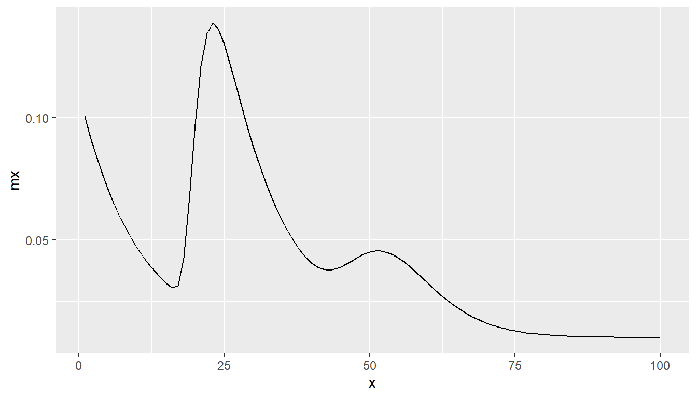
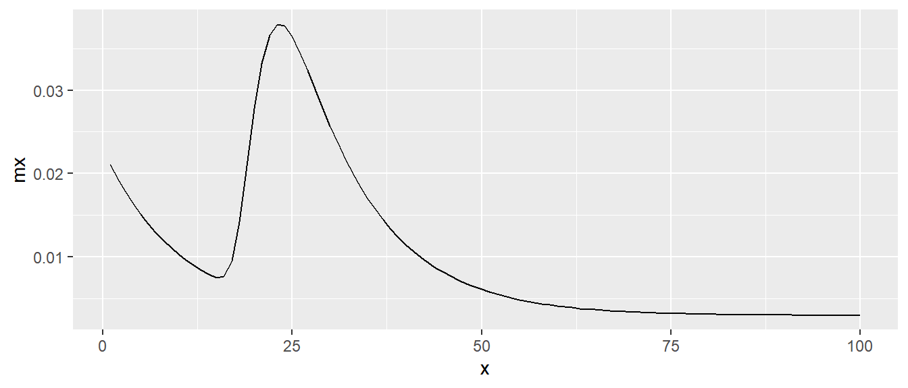
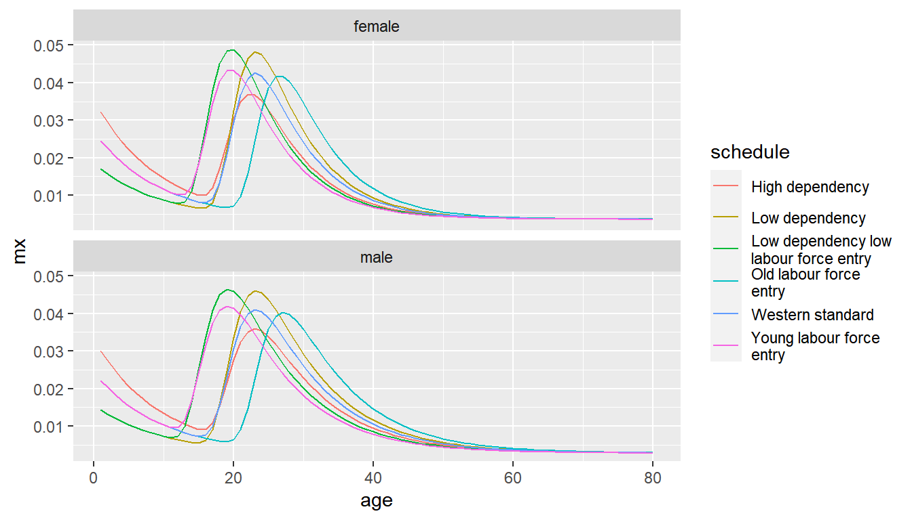
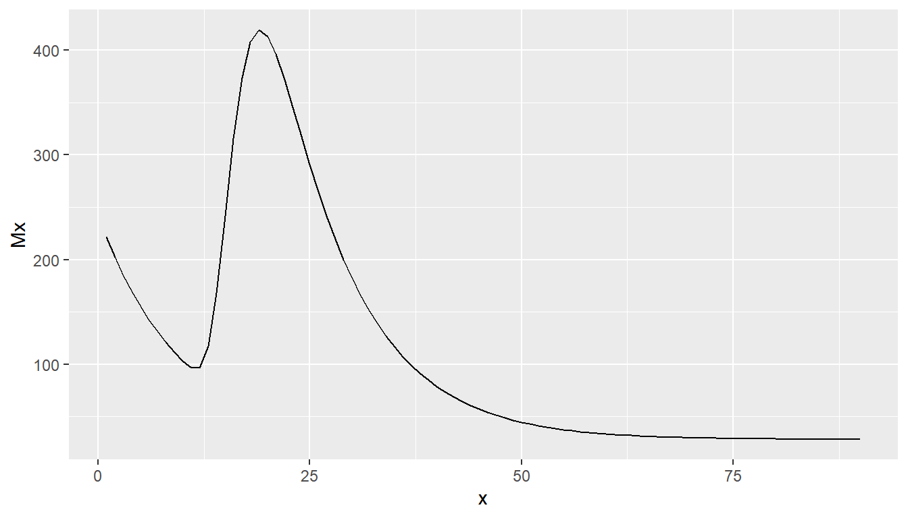
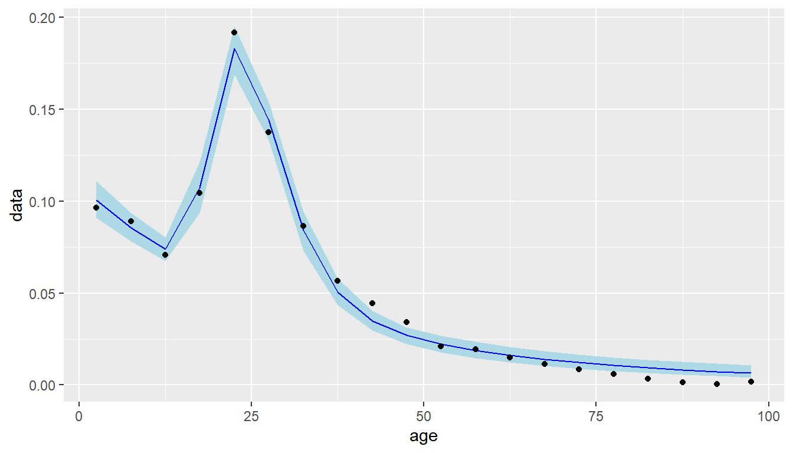
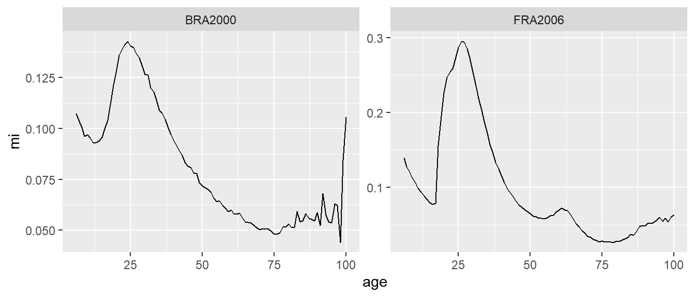
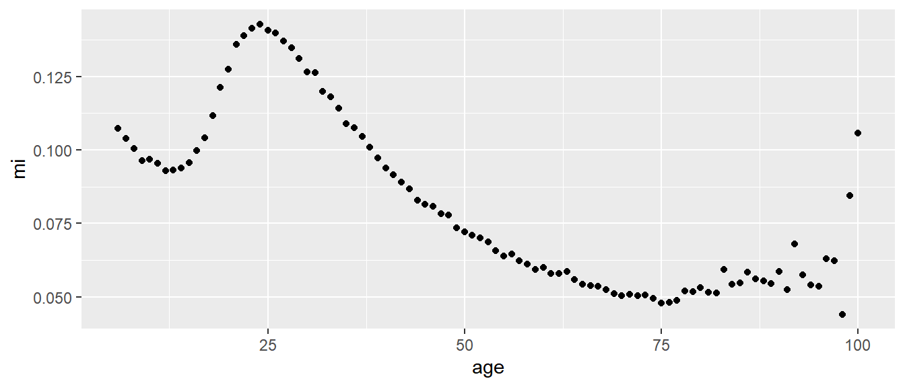
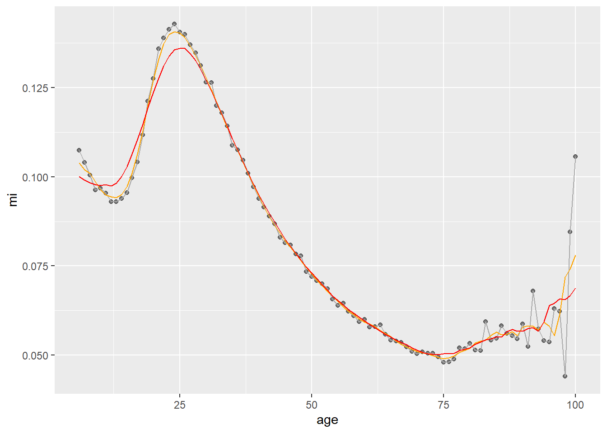
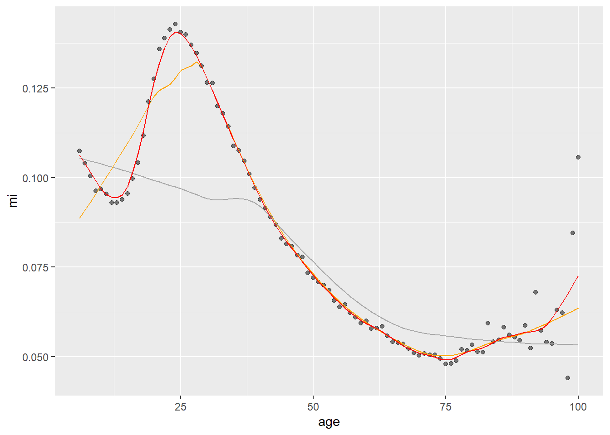
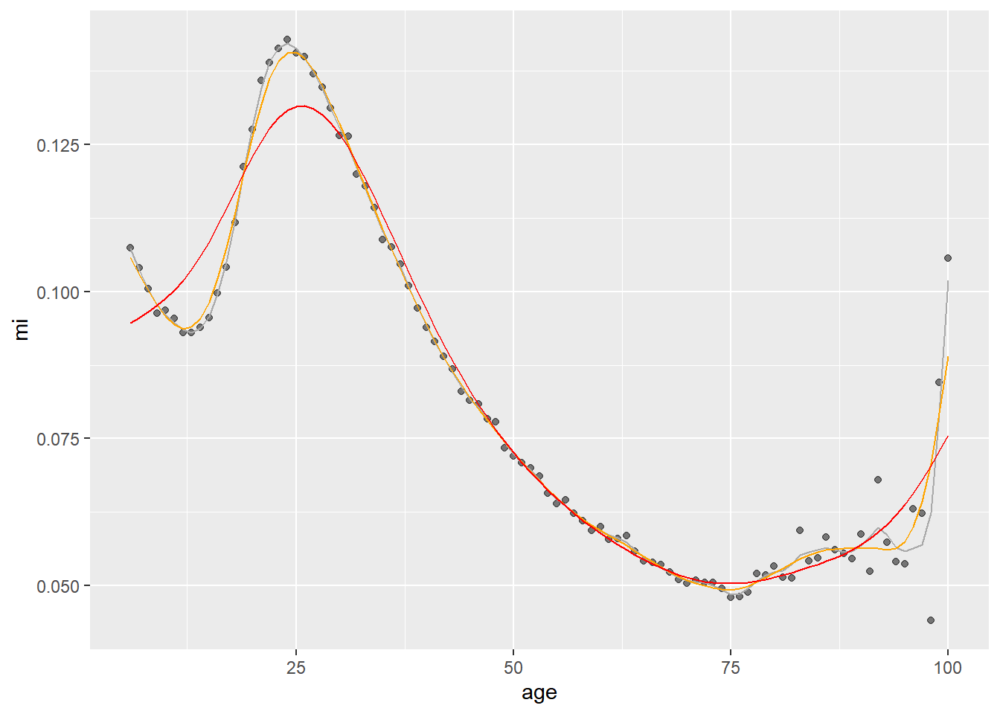

Chapter 7 Describing and Estimating Migration Age Structures
7.1 Rogers Castro
7.1.1 Rogers Castro migration age schedules
- Populations tend to experience demographic events, such fertility, mortality and migration, with persistent regularities in the age-specific rates
- Demographers have summarsied regularities in rates using mathematical expressions called model schedules.
- Rogers and Castro (1981) first proposed a migration model schedules via an analysis of over 500 age profiles of migration
7.1.2 Rogers Castro migration age schedules
Composed of curves based on migration of different life stages:
- Pre-labor force
- Labor force
- Post-labor force
- Post-retirement
- A constant term
\[ \begin{aligned} m(x) =& a_1 \exp(-\alpha_1 x) \\ &+a_2 \exp(-\alpha_2(x - \mu_2) - \exp(\lambda_2(x - \mu_2))) \\ &+a_3 \exp(-\alpha_3(x - \mu_3) - \exp(\lambda_3(x - \mu_3))) \\ &+a_4 \exp(\lambda_4x)\\ &+ c \end{aligned} \]
7.1.3 Rogers Castro migration age schedules
7.1.4 Rogers Castro migration age schedules
- Most migration age patterns have a pre-labor force downward slope and labor force peak (and a constant)
- 7-parameter model schedule
- In specific areas (in Western countries) migration age patterns have an additional retirement peak component
- 11-parameter model schedule
- In other areas, instead of a retirement peak, age profiles have an upward slope at the end of life
- 9-parameter model schedule
- In even fewer cases, some instances of both a retirement peak and a post-retirement upward slope Rogers and Watkins (1987)
- 13-parameter model schedule
- Wilson (2010) introduced a 17-parameter model to incorporate a student peak before the labour force peak.
7.1.5 Rogers Castro migration age schedules
- The
mig_calculate_rc()function in either the DemoTools package by Tim Riffe et. al. or the rcbayes package by Monica Alexander et. al. provide a quick method to calculate migration age schedules for a given parameter set- Same functions by same authors. Both packages currently not on CRAN. Availability might change.
# install from github
# install.packages("devtools")
library(devtools)
# might need to specify download.file.method
# options(download.file.method = "libcurl")
install_github("timriffe/DemoTools")
# and/or
install_github("jessieyeung/rcbayes")7.1.6 Rogers Castro migration age schedules
library(DemoTools)## Loading required package: Rcpp# define 11 parameters
p <- c(a1 = 0.1, alpha1 = 0.1,
a2 = 0.2, alpha2 = 0.1, mu2 = 20, lambda2 = 0.5,
a3 = 0.05, alpha3 = 0.2, mu3 = 60, lambda3 = 0.1,
c = 0.01)
# calculate model migration schedule with 11 parameters
mx <- mig_calculate_rc(ages = 1:100, pars = p)
mx## [1] 0.10048374 0.09187308 0.08408182 0.07703200 0.07065307 0.06488116
## [7] 0.05965853 0.05493290 0.05065697 0.04678794 0.04328711 0.04011942
## [13] 0.03725318 0.03465970 0.03231470 0.03037404 0.03132289 0.04264948
## [19] 0.06746077 0.09710942 0.12091621 0.13442550 0.13855839 0.13616639
## [25] 0.12995494 0.12185875 0.11308333 0.10431583 0.09591794 0.08806055
## [31] 0.08080783 0.07416691 0.06811661 0.06262465 0.05765908 0.05319728
## [37] 0.04923336 0.04578295 0.04288297 0.04058442 0.03893812 0.03797602
## [43] 0.03769285 0.03803360 0.03889051 0.04011081 0.04151310 0.04290860
## [49] 0.04412234 0.04501067 0.04547234 0.04545269 0.04494158 0.04396660
## [55] 0.04258384 0.04086761 0.03890096 0.03676762 0.03454596 0.03230498
## [61] 0.03010206 0.02798231 0.02597892 0.02411422 0.02240126 0.02084543
## [67] 0.01944616 0.01819839 0.01709398 0.01612274 0.01527339 0.01453424
## [73] 0.01389365 0.01334046 0.01286417 0.01245512 0.01210453 0.01180452
## [79] 0.01154811 0.01132916 0.01114229 0.01098283 0.01084676 0.01073060
## [85] 0.01063138 0.01054657 0.01047399 0.01041181 0.01035847 0.01031264
## [91] 0.01027319 0.01023918 0.01020981 0.01018438 0.01016234 0.01014319
## [97] 0.01012651 0.01011196 0.01009924 0.010088107.1.7 Rogers Castro migration age schedules
library(tidyverse)
tibble(x = 1:100,
mx = mx) %>%
ggplot(mapping = aes(x = x, y = mx)) +
geom_line()
7.2 Model schedules
7.2.1 Model migration age schedules
- The migest package contains two sets of parameters for model migration schedules.
- The
rc_model_fundare the set of fundamental parameters proposed by Rogers and Castro to represent a typical migration age pattern, based on their analysis of over 500 migration flows
library(migest)
rc_model_fund## # A tibble: 7 x 2
## param value
## <chr> <dbl>
## 1 a1 0.02
## 2 alpha1 0.1
## 3 a2 0.06
## 4 alpha2 0.1
## 5 mu2 20
## 6 lambda2 0.4
## 7 c 0.0037.2.2 Model migration age schedules
- Plot of model age schedule based on fundamental parameters
# convert data frame to named vector
p <- deframe(rc_model_fund)
p## a1 alpha1 a2 alpha2 mu2 lambda2 c
## 2e-02 1e-01 6e-02 1e-01 2e+01 4e-01 3e-03tibble(x = 1:100,
mx = mig_calculate_rc(ages = x, pars = p)) %>%
ggplot(mapping = aes(x = x, y = mx)) +
geom_line()
7.2.3 Model migration age schedules
- Rogers and Castro describe the nice properties in the parameters and their relationships
- Peaking: early versus late peaking (\(\mu_2\))
- \(\mu_2 = 20\) in the fundamental parameters
- Dominance: \(\gamma_{12} = a_1/a_2\) as the index of child dependency, and \(1/\gamma_{12}\) as index of labor dominance
- \(\gamma_{12} = 1/3\) in fundamental parameters
- Labor asymmetry: \(\sigma_2 = \lambda_2/\alpha_2\)
- \(\sigma_{2} = 4\) in fundamental parameters
- Regularity: \(\beta_{12} = \alpha_1/\alpha_2\) how the migration rates of children match to the migration rates of parents
- \(\beta_{12} = 1\) in fundamental parameters
- Users can focus on these four measures (peaking, dominance, labor asymmetry and regularity) when describing or deriving their own model schedules
7.2.4 Model migration age schedules
- The
index_age_rc()function in the migest package returns these ratios given a named vector of the parameters
rc_model_fund %>%
deframe() %>%
index_age_rc()## # A tibble: 5 x 2
## measure value
## <chr> <dbl>
## 1 peaking 20
## 2 child_dependency 0.333
## 3 labor_dependency 3
## 4 labor_asymmetry 4
## 5 regularity 17.2.5 Model migration age schedules
- The
rc_model_unare the set of fundamental parameters proposed in United Nations Department of Economic and Social Affairs Population Division (1992) for estimating age-specific migration flows in different contexts
rc_model_un## # A tibble: 84 x 5
## schedule schedule_abb sex param value
## <chr> <chr> <chr> <chr> <dbl>
## 1 Western standard ws male a1 0.0215
## 2 Western standard ws male alpha1 0.105
## 3 Western standard ws male a2 0.0694
## 4 Western standard ws male alpha2 0.112
## 5 Western standard ws male mu2 20.0
## 6 Western standard ws male lambda2 0.391
## 7 Western standard ws male c 0.0028
## 8 Low dependency ld male a1 0.0128
## 9 Low dependency ld male alpha1 0.105
## 10 Low dependency ld male a2 0.0804
## # ... with 74 more rows7.2.6 Model migration age schedules
- To calculate model schedules we can use
nest()to group together the parametersmap()to apply the parameters to themig_calculate_rc()function for each group
d <- rc_model_un %>%
select(-schedule_abb) %>%
nest(rc_param = c(param, value)) %>%
mutate(p = map(.x = rc_param, .f = ~deframe(.x)),
mx = map(.x = p,
.f = ~mig_calculate_rc(ages = 1:80, pars = .x)),
age = list(1:80))
d## # A tibble: 12 x 6
## schedule sex rc_param p mx age
## <chr> <chr> <list> <list> <list> <list>
## 1 Western standard male <tibble [7~ <dbl ~ <dbl ~ <int ~
## 2 Low dependency male <tibble [7~ <dbl ~ <dbl ~ <int ~
## 3 High dependency male <tibble [7~ <dbl ~ <dbl ~ <int ~
## 4 Young labour force entry male <tibble [7~ <dbl ~ <dbl ~ <int ~
## 5 Old labour force entry male <tibble [7~ <dbl ~ <dbl ~ <int ~
## 6 Low dependency low labour force entry male <tibble [7~ <dbl ~ <dbl ~ <int ~
## 7 Western standard female <tibble [7~ <dbl ~ <dbl ~ <int ~
## 8 Low dependency female <tibble [7~ <dbl ~ <dbl ~ <int ~
## 9 High dependency female <tibble [7~ <dbl ~ <dbl ~ <int ~
## 10 Young labour force entry female <tibble [7~ <dbl ~ <dbl ~ <int ~
## 11 Old labour force entry female <tibble [7~ <dbl ~ <dbl ~ <int ~
## 12 Low dependency low labour force entry female <tibble [7~ <dbl ~ <dbl ~ <int ~7.2.7 Model migration age schedules
# first row parameters
d$p[[1]]## a1 alpha1 a2 alpha2 mu2 lambda2 c
## 0.0215 0.1050 0.0694 0.1120 20.0400 0.3910 0.0028# data unnested
d %>%
select(-rc_param, -p) %>%
unnest(c(mx, age))## # A tibble: 960 x 4
## schedule sex mx age
## <chr> <chr> <dbl> <int>
## 1 Western standard male 0.0222 1
## 2 Western standard male 0.0202 2
## 3 Western standard male 0.0185 3
## 4 Western standard male 0.0169 4
## 5 Western standard male 0.0155 5
## 6 Western standard male 0.0143 6
## 7 Western standard male 0.0131 7
## 8 Western standard male 0.0121 8
## 9 Western standard male 0.0112 9
## 10 Western standard male 0.0103 10
## # ... with 950 more rows7.2.8 Model migration age schedules
- Use
unnest()to create a data base varying by age for each model schedule and sex for plotting
d %>%
unnest(c(mx, age)) %>%
mutate(schedule = str_wrap(schedule, width = 20)) %>%
ggplot(mapping = aes(x = age, y = mx, colour = schedule)) +
geom_line() +
facet_wrap(facets = "sex", ncol = 1)
7.2.9 Model migration age schedules
- Model migration schedules are useful when we do not have any age information, but require an estimate of age specific migration
- For example, in cohort component projections age specific migration rates are required but might not be available in any data source
- We may use an estimate or reported data on total migration to obtain age-specific migration
- Design or select appropriate model age schedule based on existing knowledge of migration age patterns for the given flow.
# example for males based on young labour force entry
p <- rc_model_un %>%
filter(sex == "male", schedule_abb == "ylfe") %>%
select(param, value) %>%
deframe()
p## a1 alpha1 a2 alpha2 mu2 lambda2 c
## 0.0215 0.1050 0.0691 0.1120 16.0900 0.3910 0.00287.2.10 Model migration age schedules
tibble(x = 1:90,
mx = mig_calculate_rc(ages = x, pars = p),
# calculate number of migrants, given a total estimate of 10,000
Mx = 10000 * mx) %>%
ggplot(mapping = aes(x = x, y = Mx)) +
geom_line()
7.3 Fitting schedules
7.3.1 Fitting Roger Castro migration age schedules
- If we have age-specific migration data we might want to estimate the parameters of a Rogers Castro age schedule to
- Smooth the data
- Analyse the parameter estimates
- Create projected age schedules based on past patterns of the age schedule parameters
- Fitting Rogers Castro migration age schedules can be difficult.
- A number of different software has been used to fit age schedules including Rogers and Little (1994), TableCurve 2D Rogers and Raymer (1999), MATLAB Rogers, Raymer, and Little (2010), and Excel Wilson (2010).
- The
mig_estimate_rc()function in DemoTools or rcbayes uses Stan, via the rstan package, a Bayesian probabilistic programming language- Estimation is carried out using MCMC sampling.
- Requires two arguments
agesa vector of migration agesmxa vector of standardized migration intensities for the corresponding ages- Specify form of age schedule using the
pre_working_age,working_age,retirementandpost_retirementarguments - set toTRUEorFALSE
7.3.2 Fitting Roger Castro migration age schedules
- Demonstrate with five-year data from the
italy_areadata set in migest- Calculate the out-migration for Islands (Sicily and Sardinia) in 1970
# include a numeric age column for mig_estimate_rc()
i <- italy_area %>%
filter(year == 1970) %>%
group_by(age_grp) %>%
sum_turnover() %>%
filter(region == "Islands") %>%
separate(col = age_grp, into = c("age_min", "age_max"),
remove = FALSE, convert = TRUE)## Adding missing grouping variables: `age_grp`i## # A tibble: 20 x 8
## # Groups: age_grp [20]
## age_grp age_min age_max region in_mig out_mig turn net
## <fct> <int> <int> <chr> <dbl> <dbl> <dbl> <dbl>
## 1 0-4 0 4 Islands 4532 7876 12408 -3344
## 2 5-9 5 9 Islands 3592 7271 10863 -3679
## 3 10-14 10 14 Islands 2228 5779 8007 -3551
## 4 15-19 15 19 Islands 3064 8526 11590 -5462
## 5 20-24 20 24 Islands 6861 15629 22490 -8768
## 6 25-29 25 29 Islands 5891 11224 17115 -5333
## 7 30-34 30 34 Islands 4042 7046 11088 -3004
## 8 35-39 35 39 Islands 2480 4612 7092 -2132
## 9 40-44 40 44 Islands 1737 3634 5371 -1897
## 10 45-49 45 49 Islands 1383 2783 4166 -1400
## 11 50-54 50 54 Islands 910 1716 2626 -806
## 12 55-59 55 59 Islands 899 1587 2486 -688
## 13 60-64 60 64 Islands 789 1217 2006 -428
## 14 65-69 65 69 Islands 602 924 1526 -322
## 15 70-74 70 74 Islands 427 702 1129 -275
## 16 75-79 75 79 Islands 311 490 801 -179
## 17 80-84 80 84 Islands 158 268 426 -110
## 18 85-89 85 89 Islands 59 116 175 -57
## 19 90-94 90 94 Islands 17 35 52 -18
## 20 95+ 95 NA Islands 95 137 232 -427.3.3 Fitting Roger Castro migration age schedules
- Requires a standardized age schedule (where values sum to one)
- Will take a few minutes and print out lots of messages from Stan
m <- i$out_mig/sum(i$out_mig)
m## [1] 0.0965527387 0.0891359780 0.0708453881 0.1045211592 0.1915976070
## [6] 0.1375962340 0.0863776786 0.0565390085 0.0445496004 0.0341170990
## [11] 0.0210366302 0.0194552052 0.0149193351 0.0113274163 0.0086058942
## [16] 0.0060069632 0.0032854411 0.0014220566 0.0004290688 0.0016794979f <- mig_estimate_rc(ages = i$age_min + 2.5, mx = m,
# set model components
pre_working_age = TRUE, working_age = TRUE,
retirement = FALSE, post_retirement = FALSE)##
## SAMPLING FOR MODEL 'f4d0f16f36ddb7179a67ef654e5d224a' NOW (CHAIN 1).
## Chain 1:
## Chain 1: Gradient evaluation took 0 seconds
## Chain 1: 1000 transitions using 10 leapfrog steps per transition would take 0 seconds.
## Chain 1: Adjust your expectations accordingly!
## Chain 1:
## Chain 1:
## Chain 1: Iteration: 1 / 2000 [ 0%] (Warmup)
## Chain 1: Iteration: 200 / 2000 [ 10%] (Warmup)
## Chain 1: Iteration: 400 / 2000 [ 20%] (Warmup)
## Chain 1: Iteration: 600 / 2000 [ 30%] (Warmup)
## Chain 1: Iteration: 800 / 2000 [ 40%] (Warmup)
## Chain 1: Iteration: 1000 / 2000 [ 50%] (Warmup)
## Chain 1: Iteration: 1001 / 2000 [ 50%] (Sampling)
## Chain 1: Iteration: 1200 / 2000 [ 60%] (Sampling)
## Chain 1: Iteration: 1400 / 2000 [ 70%] (Sampling)
## Chain 1: Iteration: 1600 / 2000 [ 80%] (Sampling)
## Chain 1: Iteration: 1800 / 2000 [ 90%] (Sampling)
## Chain 1: Iteration: 2000 / 2000 [100%] (Sampling)
## Chain 1:
## Chain 1: Elapsed Time: 0.576 seconds (Warm-up)
## Chain 1: 0.594 seconds (Sampling)
## Chain 1: 1.17 seconds (Total)
## Chain 1:
##
## SAMPLING FOR MODEL 'f4d0f16f36ddb7179a67ef654e5d224a' NOW (CHAIN 2).
## Chain 2:
## Chain 2: Gradient evaluation took 0 seconds
## Chain 2: 1000 transitions using 10 leapfrog steps per transition would take 0 seconds.
## Chain 2: Adjust your expectations accordingly!
## Chain 2:
## Chain 2:
## Chain 2: Iteration: 1 / 2000 [ 0%] (Warmup)
## Chain 2: Iteration: 200 / 2000 [ 10%] (Warmup)
## Chain 2: Iteration: 400 / 2000 [ 20%] (Warmup)
## Chain 2: Iteration: 600 / 2000 [ 30%] (Warmup)
## Chain 2: Iteration: 800 / 2000 [ 40%] (Warmup)
## Chain 2: Iteration: 1000 / 2000 [ 50%] (Warmup)
## Chain 2: Iteration: 1001 / 2000 [ 50%] (Sampling)
## Chain 2: Iteration: 1200 / 2000 [ 60%] (Sampling)
## Chain 2: Iteration: 1400 / 2000 [ 70%] (Sampling)
## Chain 2: Iteration: 1600 / 2000 [ 80%] (Sampling)
## Chain 2: Iteration: 1800 / 2000 [ 90%] (Sampling)
## Chain 2: Iteration: 2000 / 2000 [100%] (Sampling)
## Chain 2:
## Chain 2: Elapsed Time: 0.701 seconds (Warm-up)
## Chain 2: 0.601 seconds (Sampling)
## Chain 2: 1.302 seconds (Total)
## Chain 2:
##
## SAMPLING FOR MODEL 'f4d0f16f36ddb7179a67ef654e5d224a' NOW (CHAIN 3).
## Chain 3:
## Chain 3: Gradient evaluation took 0 seconds
## Chain 3: 1000 transitions using 10 leapfrog steps per transition would take 0 seconds.
## Chain 3: Adjust your expectations accordingly!
## Chain 3:
## Chain 3:
## Chain 3: Iteration: 1 / 2000 [ 0%] (Warmup)
## Chain 3: Iteration: 200 / 2000 [ 10%] (Warmup)
## Chain 3: Iteration: 400 / 2000 [ 20%] (Warmup)
## Chain 3: Iteration: 600 / 2000 [ 30%] (Warmup)
## Chain 3: Iteration: 800 / 2000 [ 40%] (Warmup)
## Chain 3: Iteration: 1000 / 2000 [ 50%] (Warmup)
## Chain 3: Iteration: 1001 / 2000 [ 50%] (Sampling)
## Chain 3: Iteration: 1200 / 2000 [ 60%] (Sampling)
## Chain 3: Iteration: 1400 / 2000 [ 70%] (Sampling)
## Chain 3: Iteration: 1600 / 2000 [ 80%] (Sampling)
## Chain 3: Iteration: 1800 / 2000 [ 90%] (Sampling)
## Chain 3: Iteration: 2000 / 2000 [100%] (Sampling)
## Chain 3:
## Chain 3: Elapsed Time: 0.617 seconds (Warm-up)
## Chain 3: 0.54 seconds (Sampling)
## Chain 3: 1.157 seconds (Total)
## Chain 3:
##
## SAMPLING FOR MODEL 'f4d0f16f36ddb7179a67ef654e5d224a' NOW (CHAIN 4).
## Chain 4:
## Chain 4: Gradient evaluation took 0 seconds
## Chain 4: 1000 transitions using 10 leapfrog steps per transition would take 0 seconds.
## Chain 4: Adjust your expectations accordingly!
## Chain 4:
## Chain 4:
## Chain 4: Iteration: 1 / 2000 [ 0%] (Warmup)
## Chain 4: Iteration: 200 / 2000 [ 10%] (Warmup)
## Chain 4: Iteration: 400 / 2000 [ 20%] (Warmup)
## Chain 4: Iteration: 600 / 2000 [ 30%] (Warmup)
## Chain 4: Iteration: 800 / 2000 [ 40%] (Warmup)
## Chain 4: Iteration: 1000 / 2000 [ 50%] (Warmup)
## Chain 4: Iteration: 1001 / 2000 [ 50%] (Sampling)
## Chain 4: Iteration: 1200 / 2000 [ 60%] (Sampling)
## Chain 4: Iteration: 1400 / 2000 [ 70%] (Sampling)
## Chain 4: Iteration: 1600 / 2000 [ 80%] (Sampling)
## Chain 4: Iteration: 1800 / 2000 [ 90%] (Sampling)
## Chain 4: Iteration: 2000 / 2000 [100%] (Sampling)
## Chain 4:
## Chain 4: Elapsed Time: 0.58 seconds (Warm-up)
## Chain 4: 0.639 seconds (Sampling)
## Chain 4: 1.219 seconds (Total)
## Chain 4:7.3.4 Fitting Roger Castro migration age schedules
The fitted object has two components
# parameter estimates
f[[1]]## # A tibble: 7 x 4
## variable median lower upper
## <chr> <dbl> <dbl> <dbl>
## 1 a1[1] 0.107 0.0951 0.118
## 2 a2[1] 0.342 0.278 0.381
## 3 alpha1[1] 0.0322 0.0271 0.0417
## 4 alpha2[1] 0.227 0.165 0.296
## 5 c 0.00151 0.0000619 0.00740
## 6 lambda2[1] 0.184 0.151 0.260
## 7 mu2[1] 24.6 21.4 27.0# fitted schedule
f[[2]]## # A tibble: 20 x 6
## age data median lower upper diff_sq
## <dbl> <dbl> <dbl> <dbl> <dbl> <dbl>
## 1 2.5 0.0966 0.100 0.0910 0.111 0.0000152
## 2 7.5 0.0891 0.0857 0.0780 0.0935 0.0000121
## 3 12.5 0.0708 0.0739 0.0676 0.0803 0.00000908
## 4 17.5 0.105 0.107 0.0936 0.121 0.00000697
## 5 22.5 0.192 0.183 0.169 0.195 0.0000713
## 6 27.5 0.138 0.144 0.133 0.154 0.0000443
## 7 32.5 0.0864 0.0842 0.0731 0.0942 0.00000486
## 8 37.5 0.0565 0.0505 0.0435 0.0580 0.0000370
## 9 42.5 0.0445 0.0349 0.0298 0.0401 0.0000931
## 10 47.5 0.0341 0.0271 0.0223 0.0314 0.0000497
## 11 52.5 0.0210 0.0222 0.0176 0.0268 0.00000146
## 12 57.5 0.0195 0.0188 0.0146 0.0234 0.000000372
## 13 62.5 0.0149 0.0162 0.0123 0.0207 0.00000167
## 14 67.5 0.0113 0.0141 0.0104 0.0184 0.00000744
## 15 72.5 0.00861 0.0123 0.00888 0.0165 0.0000133
## 16 77.5 0.00601 0.0107 0.00761 0.0149 0.0000223
## 17 82.5 0.00329 0.00943 0.00651 0.0136 0.0000378
## 18 87.5 0.00142 0.00831 0.00559 0.0126 0.0000474
## 19 92.5 0.000429 0.00734 0.00481 0.0116 0.0000478
## 20 97.5 0.00168 0.00651 0.00415 0.0108 0.00002347.3.5 Fitting Roger Castro migration age schedules
ggplot(data = f[[2]],
mapping = aes(x = age, y = data)) +
geom_ribbon(mapping = aes(ymin = lower, ymax = upper), fill = "lightblue") +
geom_line(mapping = aes(y = median), colour = "blue") +
geom_point() 
7.3.6 Fitting Roger Castro migration age schedules
- The migraR package by Ruiz-Santacruz and Garcés also has functions to estimate parameters in Rogers Castro schedule
- Also not on CRAN
- Uses an optimization procedure (non-Bayesian)
- Functions to select best form schedule
- Selecting the form of the schedule usually requires some form of visual inspection
7.4 Age Indices
7.4.1 Age Indices
- Number of criticisms of model age schedules for migration (Bell et al. (2002), Bernard, Bell, and Charles-Edwards (2014))
- Not always clear how many parameters should be included in model schedule
- Parameter estimates sensitive to the choice of model form, making comparisons difficult
- Use statistical accuracy measures to select best form, at the risk of over fitting
- Parameter estimates sensitive to initial values
- Unlikely to be the case when using
mig_estimate_rc()
- Unlikely to be the case when using
- Unstable parameter estimates
- Sensitive to measurement error in age-specific migration
- Interpretation of parameter estimates
- The indexes in
index_age_rc()have not been widely adopted, probably because of difficulty in fitting model schedules.
- The indexes in
7.4.2 Age Indices
- A number of other measures of age specific migration have been proposed that do not require fitting model age schedules.
- Most a dependent on the migration intensity \(m_{as}\), the number of migrants in a age group and given time period as a percentage of the population at risk of moving.
- Rogers (1975) proposed a Gross Migraproduction Rate (GMR) based on the sum of age-specific (and sex-specific) migration intensities \[ GMR = \sum_{as} m_{as} \]
- Bell et al. (2002) introduced
- Peak migration intensity, the largest age-specific migration intensity of any age-group
- Peak age, the corresponding age of the peak migration intensity
7.4.3 Age Indices
- Bell and Muhidin (2009) proposed and additional measures
- Breadth of peak based on the sum of the peak migration intensity at the peak age and the five age-groups before and after the peak.
- Peak share based on the percentage of the normalized migration age schedule covered by the peak age and the five age-groups before and after the peak.
- Bernard, Bell, and Charles-Edwards (2014) provide three additioanl measures
- The Maximum Upward Rate of Change (MURC) for the largest gradient in the slope of the labour force peak before the peak age
- The Maximum Downward Rate of Change (MDRC) for the largest gradient in the slope of the labour force peak after the peak age
- The asymmetry of the labour force peak based on the ratio of MURC and MDRC
- Each of these measures area calculated in the
age_index()function in the migest package
7.4.4 Age Indices
- To demonstrate we use the age schedule data of Brazil 2000 and France 2006 in the
ipumsi_agedata frame of the migest package- Migration based on five-year transitions between any minor (and major) administrative units.
ipumsi_age %>%
mutate(mi = migrants/population) %>%
filter(age > 5) %>%
ggplot(mapping = aes(x = age, y = mi)) +
geom_line() +
facet_wrap(facets = "sample", scales = "free")
7.4.5 Age Indices
- Bernard, Bell, and Charles-Edwards (2014) recommends smoothing age schedules before calculating index values
- Get very similar results without smoothing - at least in these examples
index_age()by default ignores values above 65 (and below 5) when calculating peak index statistics
- GMR still sensitive for outliers (e.g. oldest in Brazil)
- Index values for Brazil 2000
ipumsi_age %>%
filter(sample == "BRA2000") %>%
mutate(mi = migrants/population) %>%
index_age()## # A tibble: 8 x 2
## measure value
## <chr> <dbl>
## 1 gmr 7.82
## 2 peak_mi 14.3
## 3 peak_age 24
## 4 peak_breadth 147.
## 5 peak_share 18.8
## 6 murc 19
## 7 mdrc 32
## 8 asymmetry 0.5947.4.6 Age Indices
- Index values are most useful for comparing age-specific migration in different countries (or regions or time periods)
ipumsi_age %>%
group_by(sample) %>%
mutate(mi = migrants/population) %>%
index_age() %>%
pivot_wider(names_from = sample, values_from = value)## # A tibble: 8 x 3
## measure BRA2000 FRA2006
## <chr> <dbl> <dbl>
## 1 gmr 7.82 9.55
## 2 peak_mi 14.3 29.5
## 3 peak_age 24 26
## 4 peak_breadth 147. 295.
## 5 peak_share 18.8 30.8
## 6 murc 19 18
## 7 mdrc 32 30
## 8 asymmetry 0.594 0.67.5 Smoothing
7.5.1 General purpose smoothing functions
- There are many non-parametric smoothing functions in R that can be used to smooth data.
- The
statspackage, which is loaded when R opens, includesksmooth()is a kernel regression smootherloess.smooth()is a Local Polynomial Regression Fitting methodsmooth.splinea cubic spline fit
- The DemoTools package contains a
smooth_age_5()that is particularly useful for age-heaped data.
7.5.2 General purpose smoothing functions
- Smoothing methods perform some form of weighting data points on separate subsections (windows or bandwidths of the data)
- In a migration age schedule context, this involves some form of simple local regression or averaging of migration intensities at each age, given data from nearby ages.
- Careful consideration is usually required in choosing the bandwidth.
- The default values are not always sensible for migration age schedules
- Might consider censoring the very oldest values where values can become volatile due to small numbers
7.5.3 General purpose smoothing functions
- Use Brazil 2000 IPUMS International sample data to demonstrate
- Particularly rough at older age groups
b <- ipumsi_age %>%
filter(sample == "BRA2000",
age > 5) %>%
mutate(mi = migrants/population)
ggplot(data = b, mapping = aes(x = age, y = mi)) +
geom_point() 
7.5.4 General purpose smoothing functions
- Most smoothing function in R require two vectors (
xandy)- Optional arguments to control the smoothness of the fit( names differ for different smoothing functions)
- Will return a list with two components (
xandy), where the length of x may differ from the original vector provided- Set a output length argument (names differ for different smoothing functions)
- The
xcomponent will match age values - Can use within
mutate()
k1 <- ksmooth(x = b$age, y = b$mi)
str(k1)## List of 2
## $ x: num [1:100] 6 6.95 7.9 8.85 9.8 ...
## $ y: num [1:100] 0.1074 0.104 0.1004 0.0962 0.0969 ...k2 <- ksmooth(x = b$age, y = b$mi, n.points = nrow(b))
str(k2)## List of 2
## $ x: num [1:95] 6 7 8 9 10 11 12 13 14 15 ...
## $ y: num [1:95] 0.1074 0.104 0.1004 0.0962 0.0969 ...7.5.5 Kernal smoothing
- The
ksmoothfunction is unlikely to smooth a migration age schedule as the default bandwidth parameter is too small- Increase for a more suitable fit
b <- b %>%
mutate(
k_default = ksmooth(x = age, y = mi, n.points = n())$y,
k_bw5 = ksmooth(x = age, y = mi, n.points = n(), bandwidth = 5)$y,
k_bw10 = ksmooth(x = age, y = mi, n.points = n(), bandwidth = 10)$y
)
b## # A tibble: 95 x 8
## sample age migrants population mi k_default k_bw5 k_bw10
## <chr> <dbl> <dbl> <dbl> <dbl> <dbl> <dbl> <dbl>
## 1 BRA2000 6 355723. 3311728. 0.107 0.107 0.104 0.100
## 2 BRA2000 7 343852. 3307567. 0.104 0.104 0.102 0.0990
## 3 BRA2000 8 327166. 3258046. 0.100 0.100 0.101 0.0983
## 4 BRA2000 9 314905. 3272305. 0.0962 0.0962 0.0986 0.0978
## 5 BRA2000 10 324066. 3345583. 0.0969 0.0969 0.0964 0.0976
## 6 BRA2000 11 329525. 3451739. 0.0955 0.0955 0.0949 0.0978
## 7 BRA2000 12 327113. 3518160. 0.0930 0.0930 0.0944 0.0975
## 8 BRA2000 13 323180. 3473133. 0.0931 0.0931 0.0942 0.0982
## 9 BRA2000 14 334783. 3566239. 0.0939 0.0939 0.0950 0.100
## 10 BRA2000 15 337297. 3528845. 0.0956 0.0956 0.0973 0.103
## # ... with 85 more rows7.5.6 Kernal smoothing
ggplot(data = b, mapping = aes(x = age, y = mi)) +
geom_point(alpha = 0.5) +
geom_line(mapping = aes(y = k_default), col = "darkgrey") +
geom_line(mapping = aes(y = k_bw5), col = "orange") +
geom_line(mapping = aes(y = k_bw10), col = "red")
7.5.7 Loess smoothing
- The
loess.smoothfunction is also unlikely to smooth a migration age schedule as the default span parameter is too small- Adjust the smoothing parameter using
spar(between 0 and 1), default is2/3 - Use
evaluationto set the number of predicted values
- Adjust the smoothing parameter using
b <- b %>%
mutate(
lo_default = loess.smooth(x = age, y = mi, evaluation = n())$y,
lo_sp2 = loess.smooth(x = age, y = mi, evaluation = n(), span = 0.2)$y,
lo_sp1 = loess.smooth(x = age, y = mi, evaluation = n(), span = 0.1)$y,
)7.5.8 Loess smoothing
ggplot(data = b,
mapping = aes(x = age, y = mi)) +
geom_point(alpha = 0.5) +
geom_line(mapping = aes(y = lo_default), col = "darkgrey") +
geom_line(mapping = aes(y = lo_sp2), col = "orange") +
geom_line(mapping = aes(y = lo_sp1), col = "red")
7.5.9 Cubic spline smoothing
- The
smooth.splinefunction might have a nice smooth fit to migration age schedule- Adjust the smoothing parameter using
spar(between 0 and 1) - Use
nto set the number of predicted values
- Adjust the smoothing parameter using
b <- b %>%
mutate(
s_default = smooth.spline(x = age, y = mi, n = n())$y,
s_sp6 = smooth.spline(x = age, y = mi, n = n(), spar = 0.6)$y,
s_sp8 = smooth.spline(x = age, y = mi, n = n(), spar = 0.8)$y)7.5.10 Cubic spline smoothing
ggplot(data = b,
mapping = aes(x = age, y = mi)) +
geom_point(alpha = 0.5) +
geom_line(mapping = aes(y = s_default), col = "darkgrey") +
geom_line(mapping = aes(y = s_sp6), col = "orange") +
geom_line(mapping = aes(y = s_sp8), col = "red")
7.6 Graduating
7.6.1 Graduating
- If you require single year migration age data, but only have data by age groups, then graduating methods can be used to estimate migration for each age that sum to the reported age group totals.
- There a multiple graduating methods available in the
graduate()function in the DemoTools package- Built for interpolating population totals, but also suitable for migration flows
- See the guide for more detail on different methods
- Requires users to provide
Valueand minimumAge. - Can also specify the maximum value of final open age group, if exists, for certain methods such as
pclm.
7.6.2 Graduating
- Using the out-migration to Italian islands area in 1970
head(i)## # A tibble: 6 x 8
## # Groups: age_grp [6]
## age_grp age_min age_max region in_mig out_mig turn net
## <fct> <int> <int> <chr> <dbl> <dbl> <dbl> <dbl>
## 1 0-4 0 4 Islands 4532 7876 12408 -3344
## 2 5-9 5 9 Islands 3592 7271 10863 -3679
## 3 10-14 10 14 Islands 2228 5779 8007 -3551
## 4 15-19 15 19 Islands 3064 8526 11590 -5462
## 5 20-24 20 24 Islands 6861 15629 22490 -8768
## 6 25-29 25 29 Islands 5891 11224 17115 -5333mx <- graduate(Value = i$out_mig, Age = i$age_min,
method = "pclm", OAG = TRUE, OAnew = 100)
mx## 0 1 2 3 4 5
## 1540.822616 1563.081967 1582.487050 1594.810184 1594.859870 1576.283303
## 6 7 8 9 10 11
## 1534.233098 1470.025351 1388.679355 1301.771896 1221.108012 1158.023181
## 12 13 14 15 16 17
## 1121.942083 1119.554144 1158.435391 1247.103598 1398.284195 1623.913611
## 18 19 20 21 22 23
## 1935.092918 2321.755623 2741.539266 3112.329630 3324.796748 3324.915552
## 24 25 26 27 28 29
## 3125.320990 2812.139216 2482.216694 2189.772149 1958.656025 1781.415216
## 30 31 32 33 34 35
## 1641.408137 1521.553492 1407.170481 1293.744997 1182.104397 1077.109503
## 36 37 38 39 40 41
## 984.353885 906.668010 845.151088 798.771354 765.545510 742.411329
## 42 43 44 45 46 47
## 725.616964 710.186702 690.289756 660.651697 617.401802 562.289211
## 48 49 50 51 52 53
## 501.033932 441.541294 391.355174 354.054434 330.929904 320.470746
## 54 55 56 57 58 59
## 319.333087 323.280116 326.437894 324.340533 314.694694 298.140366
## 60 61 62 63 64 65
## 278.157544 258.006157 240.321118 226.037262 214.561457 204.846583
## 66 67 68 69 70 71
## 195.376275 185.304981 174.609045 163.809589 153.997862 145.822900
## 72 73 74 75 76 77
## 139.398446 134.182156 128.693201 121.517548 111.497757 98.816336
## 78 79 80 81 82 83
## 85.271323 72.734621 62.959243 56.411258 52.462550 49.962470
## 84 85 86 87 88 89
## 46.549791 40.446619 31.418669 21.471299 13.559411 8.503983
## 90 91 92 93 94 95
## 5.890223 4.961916 5.352577 7.481251 12.438906 21.715730
## 96 97 98 99 100
## 32.832828 36.073090 26.875823 13.368895 4.8918927.6.3 Graduating
# check for close match between graduate values and out_mig
# 0-4
sum(mx[1:5])## [1] 7876.062# 5-9
sum(mx[6:10])## [1] 7270.993select(i, age_grp, out_mig)## # A tibble: 20 x 2
## # Groups: age_grp [20]
## age_grp out_mig
## <fct> <dbl>
## 1 0-4 7876
## 2 5-9 7271
## 3 10-14 5779
## 4 15-19 8526
## 5 20-24 15629
## 6 25-29 11224
## 7 30-34 7046
## 8 35-39 4612
## 9 40-44 3634
## 10 45-49 2783
## 11 50-54 1716
## 12 55-59 1587
## 13 60-64 1217
## 14 65-69 924
## 15 70-74 702
## 16 75-79 490
## 17 80-84 268
## 18 85-89 116
## 19 90-94 35
## 20 95+ 1377.6.4 Graduating
# different scales in y-axis
ggplot(data = i,
mapping = aes(x = age_min + 2.5, y = out_mig)) +
geom_point()
tibble(age = 0:100, mx = mx) %>%
ggplot(mapping = aes(x = age, y = mx)) +
geom_line()
7.6.5 Exercise 5 (ex5.R)
# 0. a) Load the KOSTAT2021.Rproj file.
# Run the getwd() below. It should print the directory where the
# KOSTAT2021.Rproj file is located.
getwd()
# b) Load the packages used in this exercise
library(tidyverse)
library(migest)
library(DemoTools)
##
##
##
# 1. Run the code below to read in the population age structure data for flows
# from Florida to New York based on the 2015 American Community Survey
flny <- read_csv("./data/florida_new_york_acs_2015.csv")
flny
# 2. Run the code below to plot the age schedule for migration from New York to
# Florida. Note, the uneven spread of the age groups
ggplot(data = x, mapping = aes(x = AGE_label, y = mig_in, group = 1)) +
geom_point() +
geom_line() +
theme(axis.text = element_text(angle = 45, hjust = 1))
# 3. Estimate the age schedule based on single years up to 100, based on a
# graduation of the migration data in flny
mx <- #####(Value = flny$#####, Age = #####$age_min,
method = "pclm", OAG = TRUE, OAnew = #####)
mx
# 4. Build a data frame to store the graduated data frame and a migration
# intensities (mx rescaled so that age specific intensities sum to one)
d <- tibble(
age = 1:100,
mx = mx,
mi = #####/sum(mx)
)
d
# 5. Plot the graduated age schedule
d %>%
ggplot(mapping = aes(x = #####, y = #####)) +
geom_line()
# 6. Use the age and migration intensities in d to fit a 11 parameter Rogers-
# Castro age schedule (with a retirement peak, but no post retirement peak)
f <- mig_estimate_rc(ages = d$#####, mx = d$mi,
pre_working_age = #####, working_age = TRUE,
retirement = #####, post_retirement = FALSE)
# 7. Run the code below to plot the fitted Rogers Casto age schedule
ggplot(data = f[[2]],
mapping = aes(x = age, y = data)) +
geom_ribbon(mapping = aes(ymin = lower, ymax = upper), fill = "lightblue") +
geom_line(mapping = aes(y = median), colour = "blue") +
geom_point()
# 8. Calculate the indices based on the median of the parameter distributions
# for the Rogers Castro age schedule
f[[1]] %>%
select(variable, median) %>%
#####() %>%
#####()References
Bell, Martin, Marcus Blake, Paul Boyle, O. Duke-Williams, Philip H. Rees, John Stillwell, and Graeme John Hugo. 2002. “Cross-national comparison of internal migration: issues and measures.” Journal of the Royal Statistical Society: Series A (Statistics in Society) 165 (3): 435–64. https://doi.org/10.1111/1467-985X.00247.
Bell, Martin, and Salut Muhidin. 2009. “Cross-National Comparisons of Internal Migration.” Human Development Reports. United Nations Development Programme.
Bernard, Aude, Martin Bell, and Elin Charles-Edwards. 2014. “Improved measures for the cross-national comparison of age profiles of internal migration.” Population Studies 68 (2): 179–95. https://doi.org/10.1080/00324728.2014.890243.
Rogers, Andrei. 1975. Introduction to Multiregional Mathematical Demography. New York, New York, USA: Wiley.
Rogers, Andrei, and Luis J. Castro. 1981. “Model Migration Schedules.” RR-81-30. Vol. 81. Laxenburg, Austria: International Institute for Applied Systems Analysis. http://webarchive.iiasa.ac.at/Admin/PUB/Documents/RR-81-030.pdf.
Rogers, Andrei, and Jani S Little. 1994. “An International Journal of Parameterizing age patterns of demographic rates with the multiexponential model schedule.” Mathematical Population Studies 4 (3): 175–95. https://doi.org/10.1080/08898489409525372.
———. 1999. “Estimating the regional migration patterns of the foreign-born population in the United States: 1950-1990.” Mathematical Population Studies 7 (3): 181–216, 307. https://doi.org/10.1080/08898489909525457.
Rogers, Andrei, James Raymer, and Jani Little. 2010. The Indirect Estimation of Migration. Vol. 26. The Springer Series on Demographic Methods and Population Analysis. Dordrecht: Springer Netherlands. https://doi.org/10.1007/978-90-481-8915-1.
Rogers, Andrei, and John Watkins. 1987. “General Versus Elderly Interstate Migration and Population Redistribution in the United States.” Research on Aging 9 (4): 483–529. https://doi.org/10.1177/0164027587094002.
———. 1992. Preparing Migration Data for Subnational Population Projections. http://www.un.org/esa/population/techcoop/IntMig/migdata{\_}popproj/migdata{\_}popproj.html.
Wilson, Tom. 2010. “Model migration schedules incorporating student migration peaks.” Demographic Research 23 (8): 191–222. https://doi.org/10.4054/DemRes.2010.23.8.